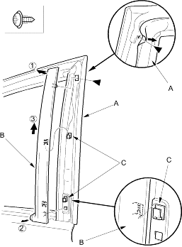
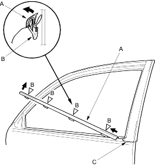

- Remove the door glass outer weatherstrip.
- Pull back the door weatherstrip (A) at the rear upper corner and remove the screw.
Fastener Location
 : Screw, 1
: Screw, 1

- Lift up the door sash trim (B) to release the hooks (C), then remove the trim.
- Install the trim in the reverse order of removal.
- Put on gloves to protect your hands.
- Take care not to scratch the door.
- Remove the power mirror (see page 20-16).
- Starting at the front, pry the door glass outer weatherstrip (A) up to detach the clips (B) and release the weatherstrip from the door sash trim (C), then remove the weatherstrip.
Fastener Locations
B  : Clip, 4
: Clip, 4

- Install the weatherstrip in the reverse order of removal and replace any damaged clips.